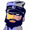
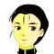

アベル 「こんな・・・！ 地形が全部、敵みたいじゃないか！」
アベル 「こんな・・・！ 地形が全部、敵みたいじゃないか！」
 エドガー 「気付いたか」
エドガー 「気付いたか」
アベル 「これで・・・ッ！！」
 アーサー 「しかし、アベルを圧倒するほど強いパイロットとは・・・、厄介そうなのが出てきたな・・・。まさかとは思うが・・・」
アーサー 「しかし、アベルを圧倒するほど強いパイロットとは・・・、厄介そうなのが出てきたな・・・。まさかとは思うが・・・」
アベル 「・・・ミアやエナでも、ザカリアでもなかった・・・。あんな・・・、あんなに・・・」
ナレーション 「体制勢力、議会・セグメント連合と、反体制勢力、エクレシアの戦いは、膠着状態に入っていた。それは、その陰に潜むユニオンの仕組んだ戦争に他ならない。アベルは、ユニオンの下位組織グレイゾンに利用され、戦い続けて来た」
「ユニオンと戦うことを決意したアベルの前に、新たなる敵がたちはだかる」
タイトル
|
− eliminator in the dark − |
 ホセ 「事態は、芳しくありません」
ホセ 「事態は、芳しくありません」
 影 「君の部下の失態が招いている事態だろう。部下の失態は君の失態だよ」
影 「君の部下の失態が招いている事態だろう。部下の失態は君の失態だよ」
ホセ 「私への叱咤でしたら、幾らでもお受けいたします。ですが、早めに手を打たないと、そんな事も言っていられなくなります」
影 「いいだろう。話せ」
ホセ 「例の海賊・・・、アンセスターと名乗る逆賊は、かなり用意周到に攻め手を考えているようです。強力なブレーンと・・・」
影 「協力者がいる、と」
ホセ 「そうです。それが何者なのかは、現在調査中です。ただ、彼らの操る糸が、エクレシアのみならず、セグメントのパーノッド派、各地のテロリストやレジスタンスまでも懐柔しつつある事は間違いありません。草の根のネットワークもです」
影 「何のために、ナディアやクブラカンを広告塔にしている。その操作のためだろうが！」
ホセ 「今現在、それを逆利用されているのです」
影 「なに？」
ホセ 「ホンモノのクブラカン・・・シャイロンは現在、地球での任に就いており、動けません。それが原因という訳ではありませんが・・・。これを・・・」
影 「ぬ・・・」
ホセ 「クブラカンの正体を不明にした点を利用されました。彼を名乗るニセモノが各地に現れ、エクレシアを一枚岩にしつつあるのです。バルバロイにありがちな衝突を避けて、テロリストやレジスタンスまでをまとめ上げている・・・」
影 「ニセモノであることは明白だろう！」
ホセ 「ホンモノかどうかは問題ではありません。エクレシアにとって象徴でさえあれば、クブラカンの正体など誰でもいいのです。現に、我々が用意したクブラカンがいたように」
影 「ナディアは！」
ホセ 「美女を使うにも問題がありました。ナディアが、コンピュータ・グラフィックによる創作物であるという噂が流れています。クブラカンと同様、ＣＧで作られたニセモノまで出てくる始末です」
影 「・・・それで、私にどうしろと？」
ホセ 「ユニオンではなく、公権力を使っての、海賊狩りを実施していただきたい」
影 「ぬう・・・」
アベルたちの隠れ家。
アーサー 「まだ悩んでるのか？ アベル」
アベル 「いえ、そう言う訳じゃ・・・」
アーサー 「前にも話したが、２０年ほど前に姿を消した伝説の傭兵、エドガー・パウエルって可能性はある。あの強さは異常だったからな」
アベル 「そう、ですね」
アーサー 「だがな。よく考えろ。あの敵は確かに強かったが、お前は翻弄されただけで、何一つ致命的打撃を喰らっちゃいない」
アベル 「でも、アレは作業用のマシンでした。アレがもし戦闘用だと考えたら・・・」
アーサー 「そン時ゃ、ケネスと協力して倒せばいいだろ。何も、お前は１人じゃない」
アベル 「はい」
アーサー 「それに、アベルにゃ悪いが、パイロット１人、マシン一機で戦局は変わらない」
アベル 「わかってます。でも、戦局を変える力にはなる！ でしょ？」
アーサー 「ふん、わかってるならいい。ケネスたちとの合流が近いぞ。楽しみだな」
アベル 「そうですね。すみません。心配かけて」
アーサー 「気にすんな。シャヒーナも、ああ見えて気にしてる」
アベル 「アーサーさんよりは、シャヒーナの事、わかってるつもりですよ」
アーサー 「そりゃあ、悪かったな。明日は作戦だ。早く寝ろよ」
議会駐在軍
 ギルバート 「わたくしが・・・、で、ありますか？」
ギルバート 「わたくしが・・・、で、ありますか？」

ネルガル 「そうだ。君が、だ」
ギルバート 「任命は光栄であります、が・・・、それは、見方によっては軍への背任行為とも捉えられかねません」
ネルガル 「議会軍とて、どことも同じ。一枚岩ではない。フォルビシュなどの腑抜けをのさばらせない為にも、粛正は必要になってくる」
ギルバート 「はっ、口が過ぎました」
ネルガル 「君の言うとおり、まだ確証はない。だが、フォルビシュは自分の立場を保持するため、エクレシアと手を結んだ」
ギルバート、サーナイアが沈む瞬間を思い出す。
ギルバート 「・・・僭越ながら、フォルビシュ中将なら、有り得る話かと存じます。しかしながら、何故、わたくしなのでありましょうか？」
ネルガル 「命令書は、責任を持って私が出す。・・・エナとミアを使いたまえ」
ギルバート 「・・・ッ！ ユ・・・ッ」
ネルガル 「君が優秀な議会軍軍人である事は承知している。君を見ていると、若い頃の私を思い出す。真っ直ぐに規律や秩序の事ばかりを考えた・・・。ならば、この宇宙に秩序をもたらす事に反対ではあるまい。ユニオンは、その秩序の象徴だよ」
ギルバート 「・・・はい」
ネルガル 「やれるか」
暗闇の中、無線で連絡を取り合いながら、武装をした男たちが、アパートを取り囲む。
 特殊部隊員Ａ 「感度良好。Ａ班、只今より侵入を開始する。どうぞ」
特殊部隊員Ａ 「感度良好。Ａ班、只今より侵入を開始する。どうぞ」
特殊部隊員Ｂ 「Ｏ．Ｋ．見取り図は頭に入ってるな？ Ｂ班、Ｃ班はそのまま待機。どうぞ」
アベルたちの隠れ家。
アベル 「ッ！」
アベル 「・・・アーサーさん、起きてください」
小声でアーサーを揺さぶるアベル。
アーサー 「あ？ なんだ？ まだ深夜じゃねえかよ」
アベル 「静かに。侵入者です」
アーサー 「なに？」
アベル 「わかりませんけど、あきらかに殺気立った気配が」
アーサー 「はン。戦士の勘ってヤツかね」
アベル 「シャヒーナを起こしてきます」
アーサー 「夜這いに間違われンなよ」
アベル 「あ、アーサーさんッ！？」
ドアから顔を出すアーサーが廊下の安全を確認。
アーサー 「よし、いいぜ」
アベル 「はい」
合図とともに飛び出すアベルに、黒ずくめの男が飛びかかってくる。
特殊部隊員 「ふぁッ！」
アベル 「なんッ！？」
アベル、特殊部隊員の攻撃をかわして攻撃に転じる。
ナイフを使用されるが、格闘の末、アベルが相手を壁にぶつけて気絶させる。
アベル 「あ、アーサーさん、ちっとも良くないじゃないですか！」
アーサー 「知らねえよッ！ 俺ァ記者だっ！ そんな事より、シャヒーナをッ！ ・・・ほらよ」
アーサーが倒れた部隊員から銃を抜き取ってアベルに渡す。
アベル 「はいっ」
アーサー 「引受人のベイカーが密告した可能性がない訳じゃない。気をつけろ」
アベル 「心得てます」
アベル、その場を離れる。
アーサー 「・・・とは言え、さすがにアベルだな。こんなのを相手にして・・・うわっ」
足下の特殊部隊員の胸元が紅く点滅する。

アイキャッチ「Ｇ−ＧＵＩＬＴＹ」
影から飛びかかってくる特殊部隊員。
アベル 「またっ！」
特殊部隊員 「おあぁッ！」
アベル 「ごめんなさいッ」
アーサーから受け取った銃を使いそうになるが、アベルは特殊部隊員の股間を３度強打して気絶させる。
特殊部隊員 「ぶふっ・・・！」
シャヒーナの部屋の前で、軽くノックして、声を掛ける。
アベル 「シャヒーナ？」
 シャヒーナ 「アベル？ 何なの？ 今の音は？」
シャヒーナ 「アベル？ 何なの？ 今の音は？」
部屋の中から声。
アベル 「誰かが、僕らを狙ってきてる。逃げるよ」
シャヒーナ 「わかったわ」
アーサー、特殊部隊員の持つ身分証をライトで照らし、確認してから、シーバーの受音装置をこすりつつ応答する。
アーサー 「すまんが、感度が悪い。もう一度頼む」
特殊部隊員（シーバーの向こう） 「こちら、ウーハイ。状況を。どうぞ」
アーサー 「Ｏ．Ｋ．メリット５。こちらウェーバー。どうやら連中に勘付かれた。部屋はもぬけのカラだ。見たところ、下水道から逃げた可能性が高い。どうぞ」
特殊部隊員（シーバーの向こう） 「Ｏ．Ｋ．メリ５。そちらは２人を地上に残して、４人で下水路を追え。我々も地上と地下で包囲網を狭める。どうぞ」
アーサー 「了解。下水道で会おう・・・と。地下の鬼か、地上の蛇か・・・」
再びアベルとシャヒーナ。廊下の様子を見つつ、先へ進む。
アベル 「気をつけて」
 シャヒーナ 「ええ。アーサーさんとベイカーさんは？」
シャヒーナ 「ええ。アーサーさんとベイカーさんは？」
アベル 「アーサーさんは無事だよ。ベイカーさんは今から」
シャヒーナ 「そう」
ベイカーの部屋の前。
アベル 「ベイカーさん？」
ドアが力なく開く。
部屋へ滑り込むアベルの前に、頭を打ち抜かれたベイカーの死体。
アベル 「っ！」
と同時に背後から襲ってくる特殊部隊員。
格闘の末、どうにか気絶させることに成功するが、それと同時に背後から銃を突き付けられる。
特殊部隊員 「Ｏ．Ｋ．いい子だ。動かないでくれ」
アベル 「くっ！」
アベル、両手をゆっくり上げる。
特殊部隊員 「物分かりのいい子は好きだぜ、ベイビー。そのまま銃を背中の方に捨てるんだ」
アベル、ゆっくり銃を落とす。
特殊部隊員 「抵抗さえしなきゃ、足しか撃たねえ」
アベル 「・・・はい」
答えた瞬間、特殊部隊員が血を撒き散らしながら横っ飛びに倒れる。
特殊部隊員 「が！？」
アベル 「えっ！？」
振り返るアベルの視線の先に、銃を構えたシャヒーナ。銃口からは硝煙があがっている。
シャヒーナ 「・・・大丈夫？」
アベル 「うん。僕は・・・。でも、ベイカーさんが・・・」
シャヒーナ 「そう」
アベル 「助けてくれてありがとう」
シャヒーナ 「どういたしまして」
アベル 「でも、その・・・、頭を撃つ事は・・・」
倒れた部隊員をちらりと見る。
シャヒーナ 「そうね。死んでしまったら何も聞き出せないし」
アベル 「そ、あ・・・う、・・・うん」
シャヒーナ 「行きましょう」
アベル 「うん。アーサーさんが待ってる」
壁にへばりついて外の様子を探るアーサーに、アベルが声を掛ける。
アベル 「アーサーさん」
アーサー 「おどかすな。シャヒーナも無事だったか。ベイカーは？」
黙ってかぶりを振るアベル。
アーサー 「そうか。ヤツの密告だなんて言って悪かったな。・・・よし、こっちから逃げるぞ」
アベル 「えっ？ 地下から逃げるんじゃ・・・」
アーサー 「半数は地下に誘導した。コイツらはＳＷＡＴだ。とうとう奴ら、警察を使ってまで俺達を追い詰めに来たぜ」
シャヒーナ 「とうとう立派なお尋ね者ね」
アーサー 「こっちの窓から抜けられる場所に、建坪率ギリギリの隙間がある。ここまでは連中も抑えてないだろ。行くぞ」
アベル 「はい」
パーティー会場。
 ルクレール 「その・・・、圧倒的に、白人が少ないように見受けますが」
ルクレール 「その・・・、圧倒的に、白人が少ないように見受けますが」
 シャイロン 「Ｒ商会の遠縁の結婚披露パーティーだからな、当然だ」
シャイロン 「Ｒ商会の遠縁の結婚披露パーティーだからな、当然だ」
ルクレール 「将補。その・・・、どうにも我々が目立っているような・・・」
シャイロン 「気にするな。わざとだ」
ルクレール 「は、はあ」
 ルオ 「・・・これはこれは」
ルオ 「・・・これはこれは」
ルクレール 「・・・ルオ・ツォートン！」
ルオ 「おや、今日は仮装パーティーだったかな」
シャイロン 「隻眼より、この方が目立つと思ったのでね」
ルオ 「君をこのパーティーに呼んだ覚えはないが、まあ、せっかく来たんだ。楽しんでくれ。きみ、シャンパンを」

コンパニオン 「どうぞ」
シャイロン 「確かに、招待状は貰えなかったが、君に会うには手っ取り早い方法だと思ってね」
ルオ 「今日はせっかくのパーティーだ。無礼講ということで聞き流すことにしよう。用件を言いたまえ」
シャイロン 「では、率直に言おう。アンセスターとか言う海賊に手を貸しているなら、手を引いてもらいたい。このままでは、ユニオンとＲ商会が全面衝突しかねんよ」
ルオ 「忠告は有り難いが、私も馬鹿じゃないからね。ユニオンと事を起こすつもりはないよ。・・・私が彼らと手を結んだのは、半年前のオケアノスの件だけだ」
シャイロン 「君が誠実な人間である事は知っている。では、Ｒ商会の他の誰が、彼らをバックアップしていると？」
ルオ 「Ｒ商会と、ユニオンの友情の証に、私が知っている有力情報を贈ろう」
シャイロンに耳打ちするルオ。
ルオ 「・・・だよ」
シャイロン 「なに？」
ルオ 「パーティを楽しんでくれたまえ」
ルクレール 「将補・・・、お知り合いなのですか？ あの、Ｒ商会第七後継者と・・・」
シャイロン 「なに、大した縁じゃない。少なくとも、連中からすればな」
アベル 「さ、シャヒーナ」
シャヒーナ 「ええ」
アーサー 「ぃよぉしッ！ どうにか逃げ切ったな。アベル！ 予定は早いが、このまま一気に作戦に移る・・・ってアベル？」
アベル 「ハーフミラー・シートの下です」
アーサー 「何処に行ったかと思ったぜ。明日になって動けないよりはマシだ。このまま強行するぞ。ランデブーはハレムの噴水跡に変える。いいな」
アベル 「了解です」
アーサー 「連中がアジトを探ったなら、ターゲットがバレちまってる筈だ。油断するなよ」
アベル 「はい！ シャヒーナ、離れて。・・・ソードケイン、行きます！」
特殊部隊員 「逃げられただと！？」
特殊部隊員 「あっ、あれ！」
特殊部隊員 「くそッ！ 本部に連絡急げ！ 連中のターゲットは遺伝子デザイン研究所だ！」
アベル 「さすがに今回は警戒が強いのかな。出てくるのが早い・・・！」
アベル 「生身を撃つんじゃなきゃ！」
アベル 「あの時の・・・、あのパイロットはいない・・・」
アベル 「僕は・・・安心してるのか？」
出てくるマシンを易々と沈めていくアベル。
アベル 「沈める！」
ホセ 「クブラカンか」
シャイロン 「はい。接触を試みましたところ、Ｒ商会とアンセスターの関連は薄そうです」
ホセ 「ふン。そう言うからには、有力な情報を得ているのだな」
シャイロン 「ええ。確証があるとは言えませんが、デマとも言えません。連中のスポンサー・・・、今回、軍機マシンのトライアルでＡＥに競り負けた、Ｂ．ａ．ｄカンパニーです。圧力を掛けてみる必要はあるかと存じます」
ホセ 「・・・わかった。やってみよう」
噴水跡。
アーサー 「よぉし、アベル。こっちだ」
アベル 「はい」
着陸したソードケインを前屈させる。
アーサー 「予定より早いが、何とか船は調達できそうだ。停泊を一つ繰り上げて、ケネスたちとの合流を優先する」
アベル 「了解です。ソードケインの分解、アタッチ・パーツだけでいいんですよね」
アーサー 「ああ」
アベル （敵との距離が、どんどんと縮まってる気がする・・・）
コックピットを覗き込むシャヒーナ。
シャヒーナ 「アベル、大丈夫？」
アベル 「ん。シャヒーナ、ごめんね」
シャヒーナ 「・・・なに？」
アベル 「僕はまだまだ甘くて、・・・その・・・シャヒーナに面倒掛けるから」
シャヒーナ 「今に始まった事じゃないわ」
アベル 「うん。・・・ありがとう」

ナレーション 「ケネス達が隠れ蓑にしてきた兵器会社に、魔の手が伸びる。合流に遅れたアベル達は、はたして彼らを救出し、再会する事が出来るのか？ 次回、『裏切る、唇』 Ｇの鼓動が、今目覚める」